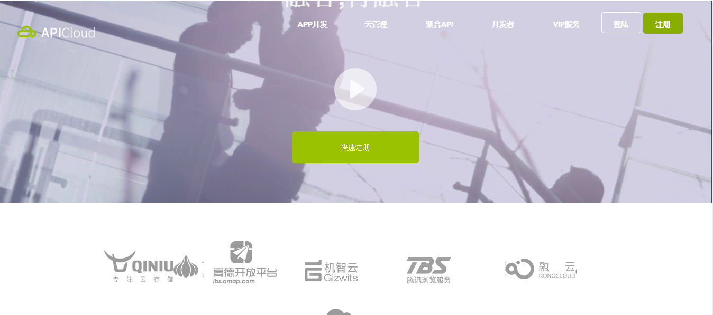

<!DOCTYPE html>
<html>
<head>
	<title>我的简历</title>
    <meta charset="UTF-8">    
    <meta name="viewport" content="initial-scale=1, maximum-scale=1, user-scalable=no, width=device-width">
    <meta name="description" content="我是一个充满活力、对前端由衷热爱、善于发现问题的前端工程师。我目前正在寻找前端工程师岗位，希望借此机会为贵司献上我的一点绵薄之力，快招我到碗里来吧！">
    <meta name="keywords" content="前端,工作,简历">
    <link rel="stylesheet" href="css/resume.css">
    <link rel="stylesheet" href="css/fontello.css">
    <link rel="stylesheet" href="css/ionic.min.css">
    
    <script src="js/ionic.bundle.min.js"></script>
   
    <script type="text/javascript">   
	    angular.module('starter', ['ionic'])
	    	   .run(function($ionicPlatform) {
	      			$ionicPlatform.ready(function(){
				        if(window.cordova && window.cordova.plugins.Keyboard) {
				          	cordova.plugins.Keyboard.hideKeyboardAccessoryBar(true);
				        }
				        if(window.StatusBar) {   // org.apache.cordova.statusbar required
				   			StatusBar.styleDefault();
				        }
	      			});
	    		})
	    	   .config(function($stateProvider, $urlRouterProvider){
	      			$stateProvider
	        		.state('app', {
		          		url: "/app",
		          		abstract: true,
		          		templateUrl: "menu.html",
		          		controller: 'AppCtrl'
	        		})
		            .state('app.playlists', {
		          		url: "/playlists",
		          		views: {
		            		'menuContent' :{
		              			templateUrl: "playlists.html",
		              			controller: 'PlaylistsCtrl'
		            		}
		          		}
		        	})     
	      			$urlRouterProvider.otherwise('/app/playlists');  // if none of the above states are matched, use this as the fallback
	   			})
		  	   .controller('AppCtrl', function($scope){})
			   .controller('PlaylistsCtrl', function($scope){
			      	console.log("PlaylistsCtrl");     
		    	})
			   .controller('PlaylistCtrl', function($scope, $stateParams) {})
    </script>
    <script>
        (function(i,s,o,g,r,a,m){
        	i['GoogleAnalyticsObject']=r;
        	i[r]=i[r]||function(){
                	(i[r].q=i[r].q||[]).push(arguments);
                },
                i[r].l=1*new Date();
                a=s.createElement(o),
                m=s.getElementsByTagName(o)[0];
                a.async=1;
                a.src=g;
                m.parentNode.insertBefore(a,m)
        })(window,document,'script','//www.google-analytics.com/analytics.js','ga');
        ga('create', 'UA-48084758-4', 'auto');
        ga('send', 'pageview');
    </script>
    <script type="text/javascript">
    	window.onload=function(){
	    	var myBtns=document.getElementsByClassName("myBtn");
	    	var mainConts=document.getElementsByClassName("mainCont");
	    	var mainInfo=document.getElementsByClassName("main-info")[0];
	    	mainConts[1].style.display="none";
	    	mainConts[2].style.display="none";
	    	for(var i=0;i<myBtns.length;i++){	    		
	    		myBtns[i].index=i;
	    		myBtns[i].onclick=function(){
	    			for(var j=0;j<myBtns.length;j++){
	    				mainConts[j].style.display="none";
	    			}
	    			mainConts[this.index].style.display="block"; 
	    		}
	    	}
    	}
    </script>
</head>
<body ng-app="starter">
	<ion-nav-view></ion-nav-view>
    <script id="menu.html" type="text/ng-template">        
	    <ion-side-menus>
	      	<ion-pane ion-side-menu-content>
	        	<ion-nav-bar class="bar-stable nav-title-slide-ios7">
	          		<ion-nav-back-button class="button-clear">
	          			<i class="icon ion-chevron-left"></i>Back
	          		</ion-nav-back-button>
	        	</ion-nav-bar>
	        	<ion-nav-view name="menuContent" animation="slide-left-right"></ion-nav-view>
	      	</ion-pane>
	      	<ion-side-menu side="left">
	        	<header class="bar bar-header bar-stable"><li class="download">简历文档</li></header>
		        <ion-content class="has-header">
		        	<div class="sidebar">
			            <div class="title">
			                
			                <h1>求职简历</h1>
			               
			            </div>
			            <div class="note">
<p>姓 名：唐成武&nbsp;&nbsp;性 别：男 </p>
<p>年 龄：24&nbsp;&nbsp;民 族：汉</p>
<p>籍 贯：广西&nbsp;&nbsp;学 历：本科</p>
<p>联系方式：15230461479</p>
<p>邮 箱:1163365557@qq.com</p>
<p><b>教育背景</b></p>
<p>时间：2012年9月-2016年6月</p>
<p>母校：保定学院 </p>
<p>所学专业： 艺术设计</p>
<p><b>工作经验</b></p>
<p>2015年8月-2016年10月 </p>
<p>公司：保定乐翔科技有限公司 </p>
<p>工作职位：web前端开发</p>
<p><b>求职意向</b></p>
<p>目标职位：web前端开发</p>
<p>期望地区：北京</p>
<p>薪资：面议&nbsp;&nbsp;&nbsp;随时到岗</p>
<p><b>掌握技能</b></p>
<p>
1.熟悉HTML5和CSS3.0标准规范,能使用HTML5和CSS3.0实现PC端和移动端的页面重构。
</p>
<p>
2.熟悉使用弹性盒布局、媒体查询等技术实现自适应布局。
</p>
<p>
3.精通Sass、Less等CSS预处理语言。
</p>
<p>
4.熟练掌握页面的兼容性问题的解决。
</p>
<p>
5.可以使用CSS3.0、JavaScript和jQuery实现各种动画特效。
</p>
<p>
6.熟练掌握JavaScript，熟悉原型、原型链、闭包、面向对象编程。
</p>
<p>
7.熟悉使用前端各种框架,比如jQuery、Bootstrap;MVC框架;Angular.js等
</p>
<p>
8.掌握使用多种前端开发工具例如：HBuilder，WebStorm，Sublime，Photoshop，Dreamwave
</p>
<p>
9.熟练使用gulp前端自动化构建工具。
</p>
<p><b>个人项目</b></p>
<p>项目名称:apiCloud</p>
<p>开发工具： Webstorm、HBuilder</p>
<p>主要技术： Html5+css3、javascript</p>
<p>项目描述：h5移动端新时代</p>
模块功能描述：用H5新增语义化标签现网页结构布局，javascript与css3结合实现功能区域隐藏与展显，轮播图，选项卡，导航 的功能，css3重点实现动画的用户交互产生良好的体验感。
  线上项目链接：https://tangchengwu.github.io/apiCloud/index.html

项目名称: 移动APP项目（简历  爱扑租房）
 
开发工具： HBuilder
  主要技术： Html5+css3.0、ionic框架
  项目描述：手机移动APP安装打包
 线上简历项目链接：https://tangchengwu.github.io/jianli2/menuAll.html
<p>项目名称: 购物车管理系统</p>
<p> 软件环境： Windows7系统</p>
 开发工具： Webstorm、Dreamweaver、HBuilder
 <br/>
 主要技术： Html+css3.0、JavaScript、Ajax Jquery、mysql等
 <br/>
 项目描述：体系结构设计 网上购物系统 登录模块 注册模块 用户管理模块等模块
 <br/>
<p><b>自我评价</b></p> 
1、热爱前段编程工作，具有良好的学习能力以及沟通能力。 
<br/>
2、有良好的自我管理能力，有高度的责任心。
 <br/>
3、具有良好团队合作精神，善于沟通。
 <br/>
4、工作认真细致，能够坚持不懈，严格要求自己，服从上级领导。
 <br/>
5、在最短的时间投入到团队的工作中，这个行业是知识的时代，所以我会努力的去学习新知识。给公司带来价值的同时充实自己！  
<p><b>线上部分项目连接</b></p>
<p>1.https://tangchengwu.github.io/jianli2/menuAll.html</p>
<br/>
<p>2.https://tangchengwu.github.io/apiCloud/index.html</p>
			            </div>            
			        </div>
		        </ion-content>
	      	</ion-side-menu>
	    </ion-side-menus>      
    </script>
    <script id="playlists.html" type="text/ng-template">
	    <ion-view title="">
	      	<ion-nav-buttons side="left">
	        	<button menu-toggle="left" class="button button-icon icon ion-navicon"></button>
	      	</ion-nav-buttons> 	      	
	      	<ion-content>		      	     						    			    
	      		<div class="main">	      			
		            <ul class="main-info">
		            	<!--基本信息-->
		                <li class="someRight mainCont">
		                	<dt></dt>
		                	
							<dt><i class="icon-bookmark"></i>求职意向</dt>
							<dd>web前端工程师</dd>
							<dd>地区：北京</dd>
							<br>
		                    <dt><i class="icon-bookmark"></i>个人基本信息</dt>
		                    <dd><span>姓 名:</span> 唐成武</dd>
		                    <dd><span>性 别:</span> 男 </dd>
		                    <dd><span>毕业院校:</span> 保定学院艺术系 </dd>
		                    <dd><span>专 业:</span> 美术学</dd>
		                    <dd><span>学 历:</span> 本科</dd>
		                    <dd><span>年 龄:</span> 24</dd>
	                    	<dd><span>民族:</span> 汉</dd>
	                    	<dd><span>籍贯:</span> 广西壮族自治区梧州市藤县</dd>
		                    <br>
		                    <dt><i class="icon-bookmark"></i>联系方式</dt>
		                    <dd><i class="icon-phone-1"></i>手机: 15230461479</dd>
		                    <dd><i class="icon-mail-alt"></i>邮箱: 1163365557@qq.com</dd>
		                    <dd><i class="icon-wechat"></i>微信:tangchengwu2016</dd>
		                    <dd><i class="icon-qq"></i>QQ: 1163365557</dd>		                    		                    		                    
		                </li>
		                <!--项目经验-->
		                <li class="mainCont">
		                    <dt><i class="icon-bookmark"></i>我的项目与工作经验</dt>
		                    <h3 style="margin-bottom: 20px;">保定乐翔科技（2015.8—2016.10）</h3>
		                    <ul class="exp">
		                        <li>
		                            <div class="circle"></div>
		                            <h4>爱扑租房APP项目</h4>
		                            <p>1.参与app前端开发工作，根据设计图完成项目的大部分样式，完成了首页、搜索列表、软件详情、软件分类、专题、关于等页面，其中有评论交互、三个不同的轮播图、侧边栏左右拖动、搜索交互等内容，项目采用 h5混合是开发 的形式，运行在 手机上的app。</p>
		                            <p>2.使用 AngularJS 框架 和 Sass 预处理器 来实现前端组件及数据交互，使用 Gulp Bower 改进工作流</p>
		                           
		                        </li>
		                        <li>
		                            <div class="circle"></div>
		                            <h4>荟生活APP项目</h4>
		                            <p>1.参与app前端开发工作，根据设计图完成项目的大部分样式，完成了首页、搜索列表、软件详情、软件分类、专题、关于等页面，其中有评论交互、三个不同的轮播图、侧边栏左右拖动、搜索交互等内容，项目采用 h5混合是开发 的形式，运行在 手机上的app。</p>
		                            <p>2.使用 AngularJS 框架 和 Sass 预处理器 来实现前端组件及数据交互，使用 Gulp Bower 改进工作流</p>
		                           
		                        </li>
		                        <li>
		                            <div class="circle"></div>
		                            <h4>美食在线APP项目</h4>
		                            <p>1.参与app前端开发工作，根据设计图完成项目的大部分样式，完成了首页、搜索列表、软件详情、软件分类、专题、关于等页面，其中有评论交互、三个不同的轮播图、侧边栏左右拖动、搜索交互等内容，项目采用 h5混合是开发 的形式，运行在 手机上的app。</p>
		                            <p>2.使用 AngularJS 框架 和 Sass 预处理器 来实现前端组件及数据交互，使用 Gulp Bower 改进工作流</p>
		                           
		                        </li>
		                    </ul>
		                    <h3 style="margin-bottom: 20px;">个人项目</h3>
		                    <ul class="exp">                       
		                       
		                        <li>
		                            <div class="circle"></div>
		                            <h4>
		                                                                               博创华宇（2015.3 - 2015.7）<br>
		                            </h4>
		                            <p>学习web前端实训，并独立完成其中的任务</p>
		                             <li>
		                            <div class="circle"></div>
		                            <h4>
		                                                                                        管理系统项目<br>
		                            </h4>
		                            <p>项目名称:  管理系统
软件环境： Windows7系统
开发工具： HBuilder、gulp
主要技术：HTML5+CSS3.0、JavaScript等<br/>
项目描述：管理系统项目是为客户要求做的一个线上线下一体化的信息平台,实现线上管理信息系统。<br/>  
负责模块：页面的设计美化，css布局的编码，数据与后台的交互；<br/>
责任描述：负责项目中页面布局，css样式的修改，js效果的增加。按钮事件，选项卡方式显示内容，轮播图等。<br/>
</p>
		                            
		                        </li>
		                            <ul class="efe">
		                                <li>
		                                    <h5>
		                                      &nbsp;&nbsp;&nbsp;&nbsp;简历2项目 
		                                      
		                                    </h5>
		                                    <p>实现了一个个人简历的基本信息静态页面，合理使用HBuilder开发工具，运用HTML语义化标签。</p>
		                                    
		                                </li>
		                                
		                                <li>
		                                    <h5><b>
		                                       &nbsp;&nbsp;&nbsp;&nbsp;apiCloud
		                                    </h5></b>
		                                    <p>用H5新增语义化标签现网页结构布局，javascript与css3结合实现功能区域隐藏与展显，轮播图，选项卡，导航 的功能，css3重点实现动画的用户交互产生良好的体验感。</p>
		                                    <p>使用HBuilder开发工具，运用HTML语义化标签。</p>
		                                   
		                                    
		                                    
		                                 
		                                </li>
		                            </ul>
		                        </li>
		                         
		                    </ul>
		                </li>
		               <!-- 技能-->
		                <li class="mainCont">
		                    <dt><i class="icon-bookmark"></i>掌握技能</dt>
		                    <h3 style="margin-bottom: 20px;">Web前端</h3>
		                    <ul class="exp">
		                        <li>
		                            <div class="circle"></div>
		                            <h4>HTML5 / CSS3.0</h4>
		                            <p>1.熟悉HTML5和CSS3.0标准规范,能使用HTML5和CSS3.0实现PC端和移动端的页面重构。</p>
		                            <p>2.熟悉使用弹性盒布局、媒体查询等技术实现自适应布局。</p>	
		                            <p>3.熟练掌握页面的兼容性问题的解决。</p>
		                        </li>
		                        <li>
		                            
		                            <h4>JavaScript</h4>
		                            <p>熟悉原生Javascript，能脱离jQuery等类库编码</p>
		                            <p>熟悉jQuery AngularJS 的使用</p>		                            
		                            <p>掌握使用多种前端开发工具例如：HBuilder，WebStorm，Sublime，Photoshop，Dreamwave</p>                           
		                        </li>                      
		                        <li>
		                           
		                            <h4>其他</h4>	
		                            <p>能用 ionic 进行混合式的移动APP开发</p>
		                            <p>熟悉前端自动化工具Gulp</p>
		                            <p>了解前端安全、性能优化方面的一些知识</p>
		                            <p>可以运用Phtoshop处理图片</p>
		                        </li>
		                    </ul>
		                    <h3 style="margin-bottom: 20px;">后台</h3>
		                    <ul class="exp">
		                    	<li>
		                            <div class="circle"></div>
		                            <h4>环境</h4>
		                            <p>了解 Apache web服务器</p>
		                        </li>
		                        <li>
		                            <div class="circle"></div>
		                            <h4>语言</h4>
		                            <p>了解 PHP，能够实现简单的数据及图像处理、自动化脚本</p>
		                            <p>了解 MySql本地数据库</p>
		                        </li>
		                    </ul>		                    
		                </li>
		            </ul>
		        </div>
	      	</ion-content>
	      	<ion-footer-bar class="bar-assertive">
				 	<div class="tabs tabs-icon-top">
				 		<a class="tab-item myBtn" href="" id="basicInfo"><i class="icon ion-ios-person"></i>基本信息</a>
				        <a class="tab-item myBtn" href="" id="workExpe"><i class="icon ion-folder"></i>项目经验</a>
					    <a class="tab-item myBtn" href="" id="mySkill"><i class="icon ion-clipboard"></i>技能</a>
				    </div> 
			</ion-footer-bar>
	    </ion-view>
	    
    </script>
</body>
</html>